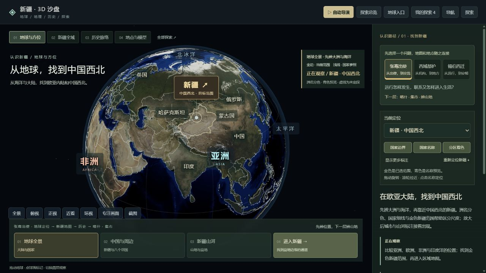
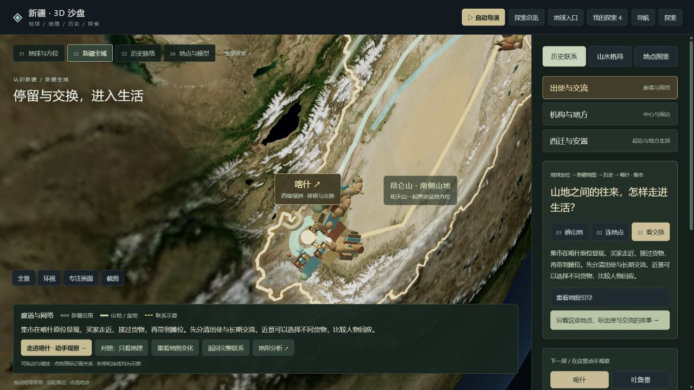
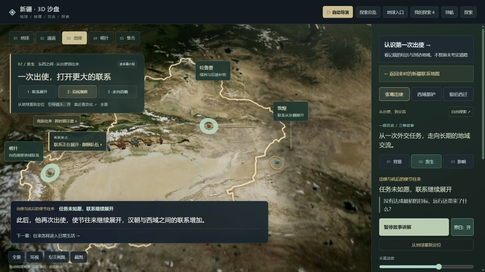
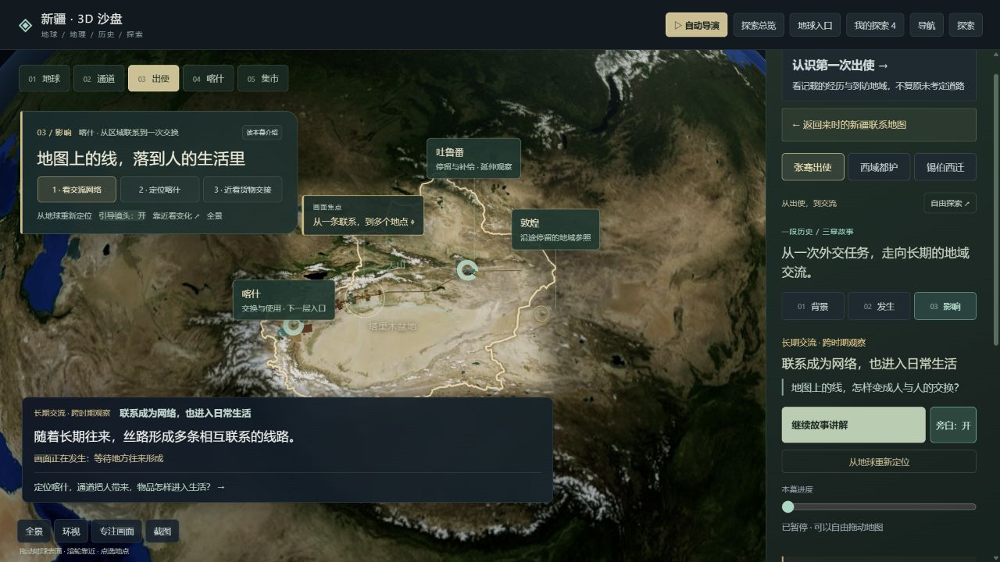
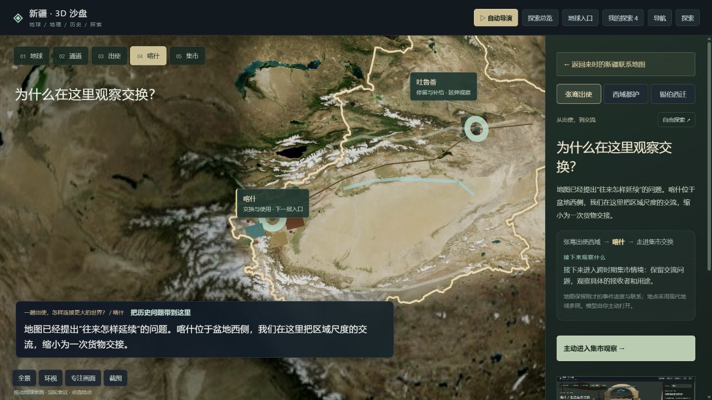
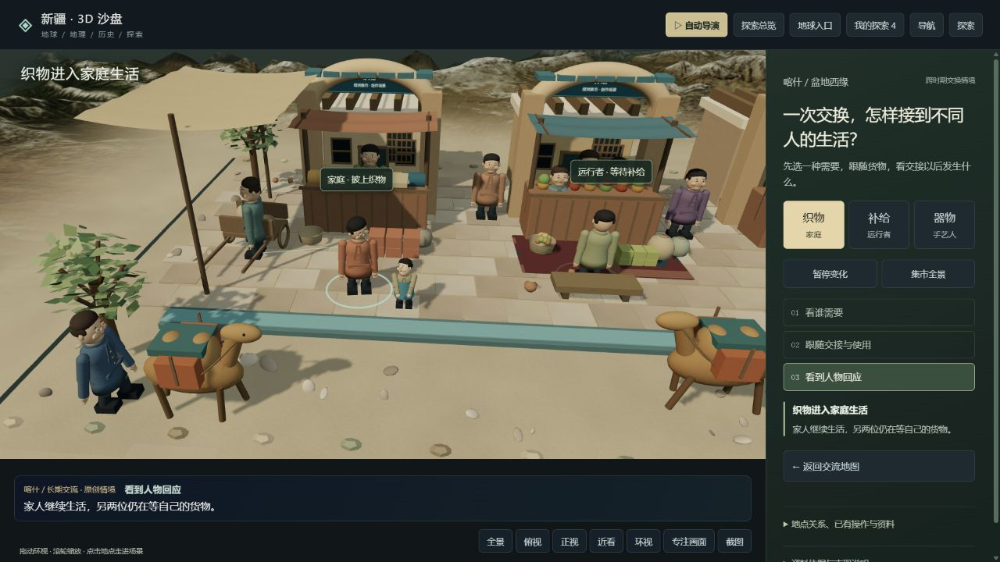
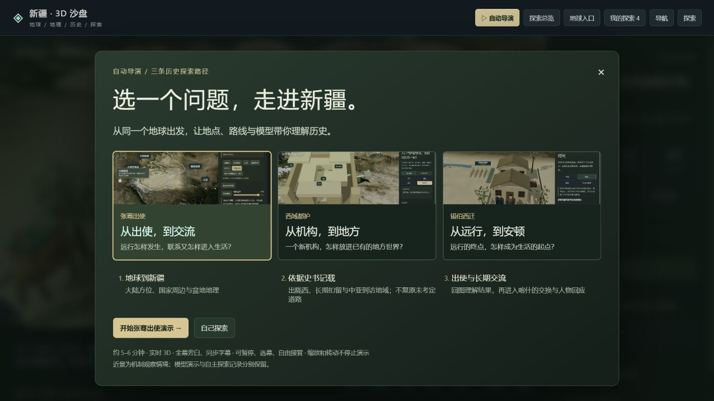
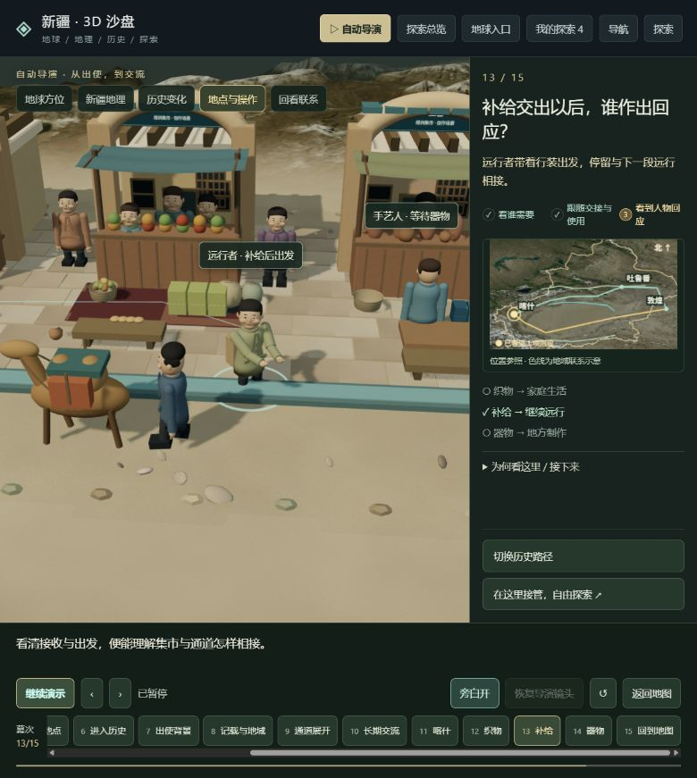
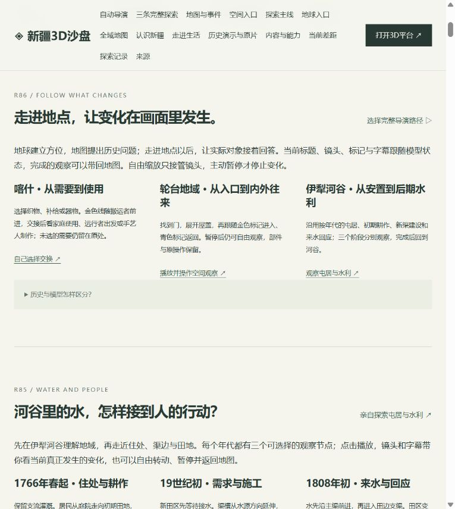
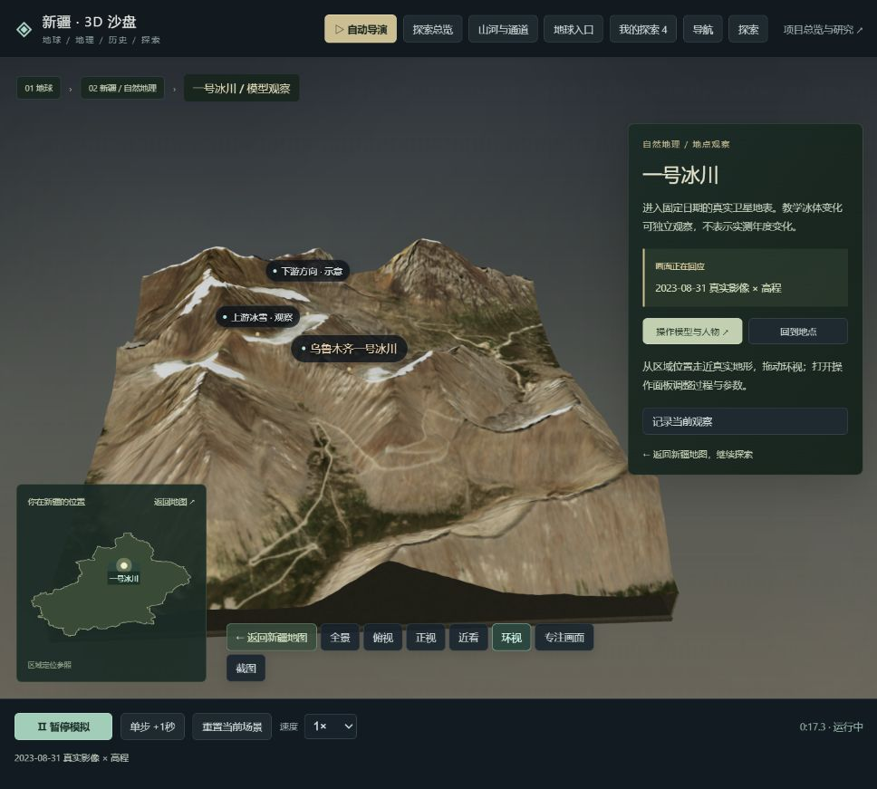

R87 / 2026.10.14 / 当前体验审查，功能保持R86
该收拢产品，不再逐轮叠加细节。
存在局部过度优化和重复建设。主要是能力继续增加、解释与控件叠加，而产品默认任务、知识主线与统一呈现没有充分收拢。
可控制的3D知识平台：地球定位新疆，读全域地理，以重大历史事件引导到地点与适当模型，能自由探索和返回。
返回3D平台
本轮实际观察的七个步骤
| 步骤 | 状态 |
|---|
| 1 · 地球入口 | 可用，首屏选择过多 |
| 2 · 新疆地图 | 联动可用，整体认识停留不足 |
| 3 · 历史讲解 | 能推进，讲解与操作重复 |
| 4 · 地点进入 | 来由明确，重复介绍与点击较多 |
| 5 · 集市近景 | 真实回应可见，美术与历史角色仍有限 |
| 6 · 自动导演 | 可选可停，入口与观看方式仍可收拢 |
| 7 · 项目总览 | 资料完整，产品说明与研发记录混排 |
优先解决的问题
- P0 · 收敛默认入口与导航
建立一条默认的地球→全域地图→事件→地点→操作→返回路径；旧能力继续保留在统一工具目录。 - P0 · 稳定全域地图与历史主线
全域先停留、事件后聚焦；把史实、地域参照和机制情境分开。说明既有资料，不通过编造路段或年代填补画面。 - P0 · 合并重复讲解与控制
一处当前解释、一组推进控制；缩短重复地点确认，保留必要字幕、自由操作及下方选幕。 - P1 · 统一重点近景呈现
只打磨真正承担事件或机制解释的重点资产；整体比例、材质和环境先于新增面部/工具小动作。 - P1 · 导演按知识节点验收
共同开场可跳过，三路径差异体现在事件问题、对象和场景；完整复核暂停、跳幕、切线、接管、返回及音画。 - P1 · 总览从研发日志改成使用说明
不删除历史素材；把旧轮次移到过程资料入口，当前页面避免按版本逐章铺开。
1 · 地球入口
可用，首屏选择过多
- 洲名、国家轮廓和新疆定位已经可读。
- 层级导航、历史路径选择、国家图层、正文下一问和底部四步同时出现，没有唯一的默认任务。
建议：先让用户找到新疆；主操作保留进入新疆和自由探索，工具与专题按需展开。

02-world-entry.png · 本轮实际浏览器画面，非效果设计图2 · 新疆地图
联动可用，整体认识停留不足
- 从地球进入地图后，默认引导继续运行并很快靠近喀什。
- 截图中完整新疆轮廓与周边已离开主要视野；底部和侧栏重复同一说明及进入按钮。
建议：到全域地图先稳定停留，辨认三山两盆与地点关系；选择事件或地点后再聚焦。

03-regional-map.png · 本轮实际浏览器画面，非效果设计图3 · 历史讲解
能推进，讲解与操作重复
- 左侧画面引导与右侧故事观察提供相同三步，重定位和全景操作也重复。
- 历史过程与长期交流分开标明了；实际出使经历另有入口，主路径容易快速转向泛化的交换机制。
建议：让事件的问题、记载的经历与结果成为主线，具体机制作为可选延伸；只保留一处当前讲解与一组推进控制。

04-history-playing.png · 本轮实际浏览器画面，非效果设计图
05-history-impact.png · 本轮实际浏览器画面，非效果设计图4 · 地点进入
来由明确，重复介绍与点击较多
- 本次实际经过定位喀什、进入地点观察、主动进入集市三个动作。
- 同一“为什么在这里”解释出现在标题、侧栏和字幕中，地图中的交流符号与后续独立近景仍有尺度与语境差异。
建议：定位后在原地图给一张简短地点卡和一个进入按钮；过渡始终保留地点参照与案例性质。

06-place-handoff.png · 本轮实际浏览器画面，非效果设计图5 · 集市近景
真实回应可见，美术与历史角色仍有限
- 本轮选择织物，实际状态为family-continues；母亲与孩子、当前步骤及字幕能对应。
- 人物、建筑和货物仍是简化原创情境；真实地表与近景资产的质感不一致。
- 回应说明在主标题、侧栏状态和底部再次出现；继续堆叠小动作不会自动提升历史理解。
建议：保留现有交接机制，收拢重复说明；先明确场景承担哪个知识问题，再统一重点资产的比例、材质和环境。

07-market-response.png · 本轮实际浏览器画面，非效果设计图6 · 自动导演
可选可停，入口与观看方式仍可收拢
- 入口清楚提供三条路径；本轮近景选幕看到补给后的远行者回应，并可暂停。
- 三个缩略图是包含旧界面文字的截图，缩小时内容难辨。
- 三路径共用三个地球开场，这是合理的基础认识，但重复观看/切换时应能跳过已看开场。
- 层级、当前三步、位置图、用途记录、幕次和控制同时出现；导演依然更接近逐模块串播，需要按知识节点检查节奏。
建议：保留下方常驻选幕、暂停、自由接管、恢复镜头和返回；共用开场只看一次，差异化的事件问题和实际场景成为主要内容。

08-director-entry.png · 本轮实际浏览器画面，非效果设计图
09-director-near-scene.png · 本轮实际浏览器画面，非效果设计图7 · 项目总览
资料完整，产品说明与研发记录混排
- 当前导航14个入口，DOM中主区域46个section；前面连续出现R86、R85、R83等版本章节。
- 新用户需要当前能理解什么和如何进入，轮次改进记录挤占产品说明。
建议：面向使用者只留产品入口、内容地图、当前能力与边界、来源；原视频与全部研究过程单独归档，保持可查。

10-overview-organization.png · 本轮实际浏览器画面，非效果设计图补充：当前自然近景
同一页面还存在另一套地点导航：多个返回地图入口及“操作模型与人物”文案出现在自然模型中。地表纹理与切片尺度的精度仍有限。

仅读取与截图，用户原页面没有被操作。保留的能力
- 连续球面定位与地域联系
- 三条历史资料与路径
- 选择后的真实模型回应
- 自由镜头、暂停、常驻选幕、接管和返回地图
- 已有声音、必要字幕、原视频与共享过程素材
暂缓的工作
- 继续增加同类入口或字幕卡
- 非核心人物小动作与装饰
- 新增整片录像
- 无具体知识问题的新场景
- 把所有场景全面改成写实的工程
下一轮整理的验收条件
- 新用户能在两分钟内说出新疆的相对位置、主要地理格局、所选事件的问题与下一层目的。
- 默认进入地图能先读全域；用户选择后才聚焦具体地点。
- 同一说明不同时占据主画面、侧栏和字幕三处。
- 历史经历、长期影响与机制情境的关系能说清，不能依靠虚构道路或资产弥补资料。
- 模型的一次操作能产生明显结果，并把实际观察带回地图。
- 三条导演各做一次完整的播放与暂停/选幕/接管/返回验收，再决定是否继续细节打磨。
可访问性风险
- 辅助文字与幕次按钮较小，低亮度地图上的部分线/标牌需要检验对比度。
- 多处重复控制增加键盘和读屏用户定位当前任务的负担。
审查范围与限制
- 本轮是截图、可见状态和源码组织的抽样审查，没有逐秒重放三条完整导演。
- 未做性能、磁盘空间、键盘、读屏或对比度量测，不把截图当成完整可访问性认证。
- 没有重新观看或核验原视频，本报告判断当前产品，不量化与原作相似度。
- 部分截图窗口宽度随当前应用变化，未作同尺寸像素对比。
- 播放中第一次直接选幕后仍观察到旧幕，暂停后再选能到补给幕；未稳定复现，记录为专项复核线索，不认定必现故障。
建议下一轮只完成一次“入口与主线整理”，验收通过后再决定近景细节投入。